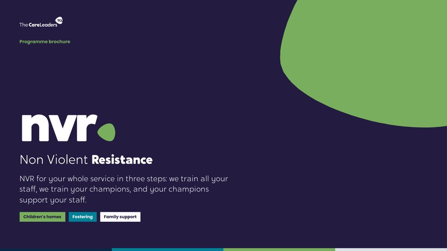

NVR training programme for children’s homes, fostering and family supportnvrNon Violent Resistancecalm adults. stronger relationships. nvr that stays
Non-violent resistance for children’s homes, fostering and family support services. It works in three steps. We train every member of staff in NVR Essentials. We give your champions advanced training through NVR Advanced. Then your champions support your staff, so NVR keeps going after the training ends.
the nvr programme, in short
What we offer, what we do, what you get and what it is for.
The offer
NVR for your whole service in three steps: we train all your staff, we train your champions, then your champions support your staff.
What we do
We do the training. Every member of staff learns the approach in NVR Essentials, and your champions go deeper in NVR Advanced, learning to coach colleagues and teach new staff.
What you get
The NVR Toolkit, a trainer pack your champions deliver from, coaching and debrief routines, and a 90-day plan each champion writes for supporting their team.
What it achieves
Adults who stay calm and present when behaviour escalates, fewer restrictive interventions, and NVR your own people can teach to new staff.
presence, not pressure
When a young person’s behaviour escalates, most staff are taught what to stop doing. NVR gives them something to do instead: stay calm, stay present, resist the behaviour without fighting the child, and repair the relationship afterwards. The NVR Programme trains your whole service in it, then leaves your own champions supporting it.
what it sets out to do
Three objectives, for every service we work with.
Practice
Every member of staff using the same seven pillars, so a young person meets the same response whoever is on shift.
Leadership
Champions who coach colleagues through the hardest moments and train new staff themselves.
Legacy
Champions supporting their own teams, with a trainer pack and a 90-day plan, so NVR keeps going after the training ends.
at a glance
Non-violent resistance for your whole service, led by your own champions.
- Who it’s forChildren’s homes, fostering and family support services
- Step 1: train all staffNVR Essentials for every member of staff: 6 hours face to face, or 2 hours live online, for up to 60 people at a time
- Step 2: train championsNVR Advanced for your champions: three 90-minute online sessions and three face-to-face days over about a term
- Step 3: champions support staffChampions coach colleagues, run debriefs and teach new staff, using the trainer pack
- The approachNon-violent resistance, developed by Haim Omer, built around parental presence and the seven pillars
- Who we trainAll staff, then the team leaders, managers and practice leads who will champion NVR
- Commissioned byCouncils and providers running children’s homes, fostering and family support
- Yours to keepThe NVR Toolkit, the trainer pack, champion routines and the 90-day plans
how it works
Three steps. We do the training; your champions carry it on.
- 1
Train all staff
Every member of staff learns the approach in NVR Essentials.
- 6 hours face to face, or 2 hours live online
- Up to 60 people at a time
- Timed around shift patterns
- 2
Train champions
Your champions go deeper in NVR Advanced.
- Three online sessions, three face-to-face days
- Work on a real case from your service
- Learn to coach colleagues and teach new staff
- 3
Champions support staff
Champions support your staff, day to day.
- Coaching colleagues through the hardest moments
- Debriefs after hard shifts
- Teaching NVR to new staff from the trainer pack
explore the two training stages
Choose a stage to see what happens in the room and what people leave with.
The day, part by part
- 1The NVR stanceParental presence: why staying matters more than winning
- 2De-escalationStaying calm in the hot moment, and baskets for choosing your battles
- 3Reconciliation and resistanceRepairing the relationship, and resisting the behaviour without fighting the child
- 4Leading it in your teamSupporters, self-care and what you will try on your next shift
Every part opens with a story from care, teaches the theory behind it and ends with a tool staff use on their next shift. See the full course on the NVR Essentials page.
The champion’s journey
- 1Health-checkOnline: test your service against the seven pillars and choose a case
- 2PresenceFace to face: de-escalation, cold-iron lines and the hot-moment protocol
- 3ReviewOnline: what happened when you tried it with your team
- 4CoachingFace to face: resistance, reconciliation, supporters and debriefs
- 5Evidence and deliverOnline, then face to face: show impact, rehearse your team session, agree your 90-day plan
Champions work on one real case from their own service all the way through, so every session is about their young people.
Three blocks, six sessions
Block 1: Where you are
Meet the cohort, health-check your service against the seven pillars and choose a case to work on.
Parental presence, de-escalation and baskets on real situations. Practise cold-iron lines and the hot-moment protocol.
Block 2: Coaching
Review what happened with your team, then reconciliation and acts of resistance.
The pillars staff find hardest under pressure, how to coach colleagues through them, and debrief practice.
Block 3: Leading it
Bring your announcements and evidence, agree how your service will show impact, and plan your team session.
Announcements, sit-ins and facilitation. Rehearse the session you will deliver, and agree your 90-day plan.
what your service keeps
The NVR Toolkit
Our online NVR course on The Care Leaders Online, covering parental presence and the seven pillars.
A seven-pillar health-check
Where your practice is strong, and where it drifts.
The trainer pack
Facilitator guide, slides, workbook and activities, so champions can deliver NVR to their own teams.
Champion routines
Coaching prompts, and debrief and announcement templates.
A 90-day plan
Written by each champion in NVR Advanced, setting out how they will support their team.
A way to show impact
Agreed with you, so you can evidence what NVR is changing.
previous work
NVR with Durham County Council: over 120 residential staff across 11 children’s homes, and a 70% fall in the use of restraint in one home.

Durham County Council: NVR in residential care
Non-violent resistance in 11 children’s homes. 120 residential staff trained, online and face to face.
Read the case study
Durham County Council: Durham Cares
The consultation behind Durham’s commitment to less restraint and stronger relationships.
Read the case studyquestions commissioners ask
Who is it for?
Children’s homes, fostering and family support services that want NVR to become how the whole service responds when behaviour escalates, not a one-off training day.
Can we buy NVR Essentials on its own?
Yes. NVR Essentials runs as a standalone course for any team. The NVR Programme adds the champions training, so your own people can support staff once the training ends.
Who should be a champion?
Team leaders, deputy and registered managers, practice leads and experienced carers who other staff already turn to, and who will be in post for the year ahead.
How many champions?
It depends on the size of your service. We agree the number with you, so every home or team has a champion to turn to.
Do champions need NVR Essentials first?
It helps, and in the full programme they do it with their teams. Champions who missed it start with the NVR Toolkit before the first block.
What happens after the training?
Your champions support your staff: coaching colleagues, running debriefs and teaching NVR to new staff from the trainer pack. Each champion leaves NVR Advanced with a 90-day plan for their team, and you keep the trainer pack and the NVR Toolkit.
Where does NVR come from?
Non-violent resistance was developed by Haim Omer to help parents respond to aggression without escalating it. We have adapted it for children’s homes, fostering and family support, and every session pairs it with lived experience of care.
How is it priced?
Every service is different, so we quote for your numbers of staff and champions. Tell us about your service and we’ll come back to you within 3 working days.
download the nvr programme brochure
The whole programme in one PDF: the three steps, NVR Essentials, NVR Advanced session by session, what your service keeps and the Durham case study.
Thank you. Your brochure is downloading.
If it didn’t start, open the brochure here.

talk to us about the nvr programme
Tell us about your service and what you need, and we’ll reply within 3 working days.